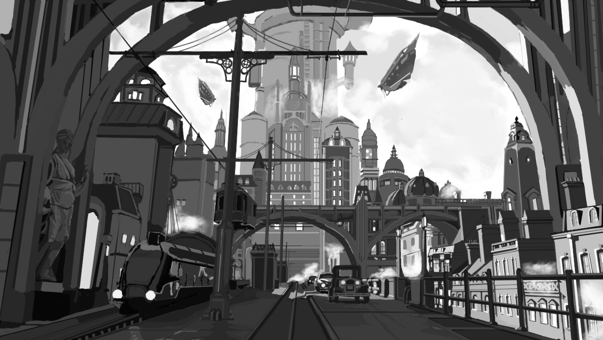

絵画·模写
氷山
青い海に浮かぶ氷塊の遺跡。

城
魔法使いたちが魔法の都へ向かっている。
この絵は、青を基調とした色使いに少量の赤を対比として加えることで構成されていますが、今改めて見ると、色のコントラストをさらに強めた方がよかったかもしれません。
稲妻
『原神』の風景、色彩練習として描いた。
秋
青いコートを着た旅人が小舟を操り、静かな色彩を破った。

火海の上で
崖の上で、少年が燃える村を黙って見つめている。

リンク
『ゼルダの伝説 ティアーズ オブ ザ キングダム』の風景。

Loser
長髪の青年が屋上で踊っている。ぼんやりとした輪郭のみで描写した。
魔女
『水星の魔女』アニメのオープニングシーン。
白黒模写
色彩コントロールを練習するために模写した未来都市と遺跡。
